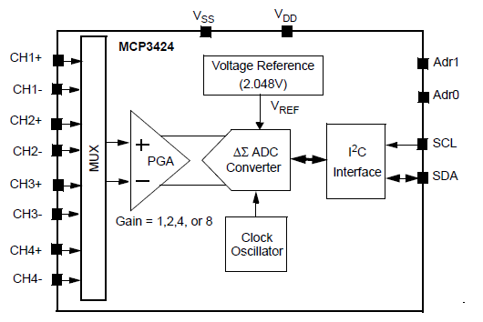
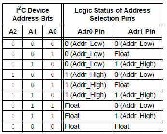
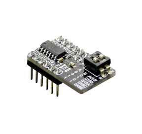
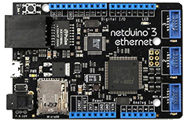
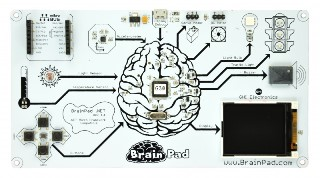
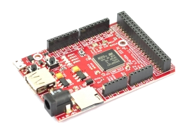
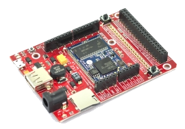

Sommaire
- LE MATERIEL
- Les circuits 342x: 18-Bit, Multi-Channel ΔΣ Analog-to-Digital Converter with I²C Interface and On-Board Reference
- Les cartes Netduino
- Les cartes FEZ
- LE LOGICIEL
- LES FASCICULES
- La page du projet MicroToolsKit
1. LE MATERIEL
1.1 Les circuits 342x : 18-Bit, Multi-Channel ΔΣ Analog-to-Digital Converter with I²C Interface and On-Board Reference.
- Présentation
- Schéma interne du composant
- Adressage
- Influence de la résolution sur le débit binaire
- Documentation: pdf
- Distributeur: Go Tronic
Les circuits MCP3422, MCP3423 et MCP3424 sont des convertisseurs analogique numérique 18 bit sigma-delta précis et à faible bruit.

Adresse de base : 0x68


Module 4 canaux analogiques I²C à circuit MCP342x
| Module DFROBOT DFR0316 (MCP3424) | ADC3 click - MikroElektronika (MCP3428) |
|  |

|
| Documentation - Schéma | Documentation |
1.2 Les cartes Netduino
Wilderness Labs
- Microcontrôleur : STM32F405RG 32 bits à architecture Cortex-M4 cadencé à 168 MHz.
- RAM : 164KB+.
- Flash : 1408KB.
- Port Ethernet : 10/100Mbps (Wifi:802.11b/g/n)*.
- E/S numériques : 22
- Entrées analogiques : 6
- Stockage: carte µSD
- IDE : Microsoft Visual Studio
- Framework : .NETMF 4.3
- Langages de programmation : C#, VB
- Compatibilité : shield Arduino, Gadgeteer
|  |

|
| Netduino 3 Ethernet | Netduino 3 wifi* |
- Sites à consulter : Netduino
- Distributeurs : Mouser Electronics
1.3 Les cartes FEZ
GHI Electonics (Extrait)
-
Microcontrôleur
- 84 MHz 32-bit ARM Cortex-M4 ( BrainPad ),
- 180 MHz 32-bit ARM Cortex-M4 ( PANDA III)*,
- 120 MHz 32-bit ARM Cortex-M3 ( COBRA III)**
- SoC(SoM)* : G30 G80 G120*
- RAM : 68KB, 156KB*, 2.87MB**.
- Flash : 128KB, 256KB*, 13.67MB**.
- E/S numériques : 49, 53*, 60**
- Entrées analogiques : 16, 16*, 8**
- Réseaux : Ethernet TCP/IP, WiFi, and SSL.
- Stockage: carte µSD
- IDE : Microsoft Visual Studio Community 2015
- Framework : .NETMF 4.3
- Langages de programmation : C#, VB
|  |  |  |
| BrainPad v1 | PANDA III* | COBRA III** (compatible Gadgeteer) |
- Sites à consulter : GHI ELECTRONICS
- Distributeurs : Mouser Electronics
- Schémas : BrainPad v1, Panda III, Cobra III
2. LE LOGICIEL
2.1 Contenu du répertoire proposé au téléchargement
Le répertoire proposé au téléchargement (au format zip ou tar.gz) contient la solution MCP342x composée :
- Du projet MCP342x : le code source de la classe MCP342x.
- Du projet Netduino : un exemple d'utilisation de cette classe avec une carte Netduino.
- Du projet FezPanda : un exemple d'utilisation de cette classe avec une carte Fez Panda.
- Du projet BrainPad : un exemple d'utilisation de cette classe avec une carte BrainPad.
- Du projet BrainPadLibrary : une bibliothèque écrite par GHI Electronics pour une utilisation aisée du matériel présent sur la carte.
2.2 Le NuGet MicroToolsKit
La dernière version compilée de la classe MCP342x se situe dans la bibliothèque MicroToolsKit disponible sur nuget.org.
Organisation des classes contenues dans MicroToolsKit [lien]
Important : Installer ce nuget dans le projet Visual Studio simplifie l'utilisation de la classe.
2.3 Le Wiki .NetMF v4.3
Un wiki est dédié au microframework .Net v4.3. Il propose au téléchargement :- Des exemples de code pour les cartes Netduino, GHI FEZ (Panda 3 , BrainPadetc) . [lien]
2.4 Description et utilisation de la classe MCP342x
- Rôle: Contrôler un capteur de température à infrarouges MCP342x via un bus I²C.
- Assembly: MicroToolsKit (disponible sur nuget.org)
- Espace de noms: Microtoolskit.Hardware.IO
Création d'un projet avec l'IDE Visual Studio
- Créer un nouveau projet en suivant la démarche décrite dans le chapitre "Premier programme en C# étape par étape" avec à une carte Netduino ou avec une carte Fez (Panda 3, BrainPad, etc). [lien]
- Utiliser le gestionnaire de paquets NuGet pour ajouter la bibliothèque MicroToolsKit ( nuget.org) dans le projet. (Dans l'explorateur de solution, clic droit sur les Références du projet puis choisir Gérer les packages NuGet.... Installer le paquet.)
- Ajouter l'espace de noms Microtoolskit.Hardware.IO dans l'en-tête du fichier source.
- Créer un objet en utilisant le constructeur MCP342x.
- Utiliser la méthode ReadVolts pour déclencher une mesure de la tension présente sur l'une des entrées du convertisseur analogique numérique.
Exemple
using System.Threading;
using Microsoft.SPOT;
using Microtoolskit.Hardware.IO;
namespace test
{
public class Program
{
public static void Main()
{
MCP342x can = new MCP342x();
can.CHannel = MCP342x.Channel.Ch2;
double canal = System.Math.Pow(2, (double)can.CHannel);
can.Resolution = MCP342x.SampleRate.FourteenBits;
int resolution = 12 + 2*(byte)can.Resolution;
can.Gain = MCP342x.PGA_Gain.x4;
double gain = System.Math.Pow(2, (byte)can.Gain);
while (true)
{
Debug.Print("Continuous on channel " + canal + " " + "Gain: " + gain + " " + "Resolution: " + resolution);
Debug.Print("Tension = " + can.ReadVolts().ToString("F2"));
Thread.Sleep(1000);
}
}
}
}
Constructeurs
| Syntaxe | Description | |

|
Mcp342x( UInt16 SLA, Int16 Frequency ) | Constructeur de base.
Par défaut : Channel = CH1, Resolution = 12 bit, Conversion = Continuous, Gain = 1 Instancie un objet "MCP342x ". SLA : adresse du module DFROBOT comprise entre 0x68 et 0x6B => SLA= 0x68 (par défaut) Frequency: >Féquence du signal SCL = 400kHz. (par défaut) Exemple MCP342x can = new MCP342x(); |
Enumérations
| Syntaxe | Description | |

|
Channel |
Sélection du canal sur lequel sera effectuée la conversion.
|
|
|
ConversionMode |
Un échantillonnage ou échantillonnage continu.
|
|
|
PGA_Gain |
Facteur d'amplification du signal avant une conversion.
|
|
|
SampleRate |
Régle la résolution du convertisseur et la fréquence d'échantillonage Fe :
|
Propriétés
| Syntaxe | Description | |

|
Resolution | Fixe ou retourne la résolution du convertisseur.
Type : SampleRate Exemples // Pour régler la résolution du can à 14 bits. can.Resolution = MCP342x.SampleRate.FourteenBits; // Pour connaître la résolution du can int resolution = 12 + 2*(byte)can.Resolution; |
|
|
Gain | Fixe ou retourne le gain appliqué au signal sur l'entrée sélectionnée.
Type : PGA_Gain Exemples // Pour régler le gain de l'amplificateur à x4. can.Gain = MCP342x.PGA_Gain.x4; // Pour connaître la valeur du gain de l'amplificateur double gain = System.Math.Pow(2, (byte)can.Gain); |
|
|
CHannel | Fixe ou retourne le canal sélectionné.
Type : Channel Exemples // Pour relier le canal CH2 à l'entrée du can. can.CHannel = MCP342x.Channel.Ch2; // Pour connaître le canal relié au can double canal = System.Math.Pow(2, (double)can.CHannel); |
|
|
Mode | Fixe ou retourne le mode de conversion.
Type : ConversionMode Exemples // Pour régler le mode de conversion sur One Shot . can.Mode = MCP342x.ConversionMode.OneShot; // Pour connaître le mode de conversion byte mode = (byte)can.Mode; |
|
|
TransactionTimeOut | Fixe ou retourne le temps (en ms) accordé à la transaction avant la génération d'une System.IO.Exception. 1000ms
par défaut.
Type : ushort Exemples // Pour régler la durée maximum d'une transaction à 200ms. can.TransactionTimeOut = 200; // Pour connaître la durée maximum accordée à une transaction ushort time = can.TransactionTimeOut; |
Méthodes
| Syntaxe | Description | |
|
|
void ConfigDevice( byte value) |
Configure le circuit avec :
Note Une exception System.IO.IOException est générée avec le message "I2CBus error SLA" en cas d'échec de la communication. SLA est l'adresse du circuit. |
|
|
double ReadVolts()
|
Configure le circuit si des paramètres ont été changés. Renvoie la valeur de la tension présente sur l'entrée sélectionnée (en V) Notes - Une exception System.IO.IOException est générée avec le message "I2CBus error SLA" en cas d'échec de la communication. - Une exception System.IO.IOException est générée avec le message "No sample on SLA" si la lecture du résultat de la conversion échoue. SLA est l'adresse du circuit. |